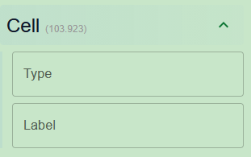

Welcome to bMINTY
At a Glance
bMINTY is a locally deployed web application, offering structured management of data produced by the analysis of high-throughput sequencing experiments.

Setup & Maintenance
Comprehensive guide to installing, configuring, and updating bMINTY using Docker.
1. Initial Installation
The simplest way to run bMINTY is with Docker. No external dependencies (Python/Node) are required.
# Clone the repository
git clone https://github.com/GeorgakilasLab/bMINTY
cd bMinty
# Start services (First time build)
docker compose up --build2. Changing Ports
By default, the Frontend runs on 3000 and the Backend on 8000. To change this, you can use a .env file.
# Create .env file
cp .env.example .env
# Edit .env to set your preferred ports
FRONTEND_PORT=3001
BACKEND_PORT=8001
# Re-launch with new configuration
docker compose up --build3. Accessing the Web Interface
Once the Docker containers are running successfully, the bMINTY web interface can be accessed directly from your browser.
-
Default URL:
http://localhost:3000 -
Backend API (default):
http://localhost:8000
If you changed the ports using the .env file, make sure to use the corresponding values instead.
Example
If your .env contains:
FRONTEND_PORT=3001
BACKEND_PORT=8001Then open:
- Frontend:
http://localhost:3001 - Backend API:
http://localhost:8001
4. Updating bMINTY
To update your instance with the latest features from GitHub:
# 1. Stop current containers
docker compose down
# 2. Pull latest code
git pull origin main
# 3. Rebuild containers to apply changes
docker compose up --buildRepo Layout
- Backend:
bmintyApi/(Django API) - Frontend:
bmintyReact/(React UI) - Orchestration:
docker-compose.yml
Explore Functionality
The Explore page lets you navigate your data hierarchy with ease:
- Study → Assay → Data: Drill down to see all linked experiments and metadata.
To access the Explore page, open your browser and navigate to:
http://localhost:3000Expanding Data Levels
Clicking on a Study row reveals associated Assays. Clicking an Assay reveals detailed metrics including pipeline info and assembly versions.


Modifying Metadata
You can edit study or assay details directly from the interface using the modify actions.


Filtering Panel
The sidebar filter panel allows you to drill down into massive datasets using metadata tags. The filters are auto-filled from the database.

Detailed Filter Categories
1. Study Filters

- Study Name: A short, human-friendly unique identifier for the study.
- Study External ID: A unique study identifier used to map the study to external repositories (e.g. GEO accession).
- Repository: The external repository that originally hosts the study data (e.g. GEO, ArrayExpress).
- Description: A detailed description of the purpose and context of the study.
- Note: Any note related to the study.
2. Assay Filters

- Assay Name: A short, human-friendly unique identifier for the assay.
- Assay External ID: The external id of the assay.
- Assay Type: The type of assay that was performed.
- Tissue: The tissue origin of the sample used for the assay.
- Cell Type: The cell type isolated from the sample (if applicable).
- Treatment: A brief description of any treatment applied prior to sampling.
- Platform: The platform or technology used to perform the assay.
- Note: Any note related to the assay.
- Target: The molecular target of the assay (e.g. DNA, RNA), if applicable.
- Date: The date on which the assay was performed.
- Kit: The kit used to prepare the sample for the assay.
- Description: A detailed description of the purpose of the assay.
- Availability: Indicates whether the assay is visible in the user interface.
3. Cell Filters
Filter by Cell type and Cell label.
4. Assembly Filters

Filter by Assembly Name (GRCh38, mm10) or Version.
5. Interval Filters

Filter by genomic interval Types (e.g., Peaks, Genes) or Biotypes.
Data Import Wizard
The wizard guides you through ingesting complex genomic datasets safely. You can either import an entire database or individual tables.


Step-by-Step Wizard to import individual data.
Scroll horizontally to view all steps:


Exporting Data
Export your curated data for downstream analysis or publication. You can export the full database or a filtered subset.


Supported Formats
- RO-Crate: FAIR-compliant research object packaging, ideal for publication supplementary material.
- CSV: Raw data tables for R/Python analysis.
- SQLite: Full portable database snapshot.
Study Table
This table acts as the root of the data hierarchy, representing a coherent biological study.
| Column Name | Description | Example |
|---|---|---|
| idPK | Primary Key | 1 |
| external_id | Unique study ID used to find the study in an external repository | GSE100738 |
| external_repo | Name of the external repository that the external_id corresponds to | GEO |
| name | A short name that describes the study | ImmGen ATAC-seq data |
| description | A lengthy description of the study | Immunological Genome Project chromatin accessibility maps... |
| availability | Boolean flag that toggles visibility in the UI | 1 |
| note | Additional information or remarks | Study imported from Alpha laboratory |
Pipeline Table
Stores metadata about the bioinformatic pipelines used to generate the data.
| Column Name | Description | Example |
|---|---|---|
| idPK | Primary Key | 1 |
| name | A short name that describes the pipeline | aPEACH ATAC unreplicated |
| description | A lengthy description of the pipeline | Automated Pipeline for End-to-End Analysis... |
| external_url | URL of an external repository for the pipeline | https://doi.org/10.3390/biology13070492 |
Assay Table
Represents individual experiments performed within a study.
| Column Name | Description | Example |
|---|---|---|
| idPK | Primary Key | 1 |
| study_idFK | Foreign key linking to the Study table | 1 |
| pipeline_idFK | Foreign key linking to the Pipeline table | 1 |
| external_id | Unique assay ID for external repositories | GSM2692171 |
| type | Type of the assay | ATAC-seq |
| target | Target molecule of the assay (protocol-dependent) | genomic DNA |
| name | Short name that uniquely describes the assay | replicate 1 |
| tissue | Tissue origin of the sample | Thymus |
| cell_type | Cell type isolated from the sample | Double Negative Thymocytes |
| treatment | Description of treatment applied | not applicable |
| date | Date the assay was performed | 03/07/2017 |
| platform | Sequencing platform used | Illumina NextSeq 500 |
| kit | Preparation kit used | Nextera DNA Library Preparation Kit |
| description | Lengthy description or URL | https://www.ncbi.nlm.nih.gov/... |
| availability | Boolean flag that toggles visibility in the UI | 1 |
| interval_count | Total genomic intervals associated with the assay | 332,792 |
| non_zero_cells | Total cells with non-zero signal (single-cell only) | 127,442,010 |
| zero_cells | Total cells with zero signal (single-cell only) | 855,419,590 |
| note | Additional remarks | To be included in downstream analysis |
Assembly Table
Stores reference genome assembly information.
| Column Name | Description | Example |
|---|---|---|
| idPK | Primary Key | 1 |
| name | Name of the external repository hosting the assembly | NCBI Genome assembly GRCm39 |
| version | Commonly used name of the assembly version | GRCm39 |
| species | 3-letter nomenclature of the species | Mus musculus (mmu) |
Interval Table
Defines genomic regions (peaks, genes, regulatory elements) of interest.
| Column Name | Description | Example |
|---|---|---|
| idPK | Primary Key | 1 |
| assembly_idFK | Foreign key linking to the Assembly table | 1 |
| external_id | Unique genomic interval ID set by user | 32413 |
| parental_id | External ID of a parental interval (hierarchical support) | null |
| name | Name assigned by repository or user | preT.DN1_peak_1 |
| type | Type of interval (e.g., ATAC_peaks, Genes) | ATAC_peaks |
| biotype | Biotype (e.g., protein_coding) | - |
| chromosome | Chromosome identifier | GL456210.1 |
| start | Chromosomal start coordinate | 159375 |
| end | Chromosomal end coordinate | 159581 |
| strand | DNA strand (+ or -) | + |
| summit | Coordinate of interval summit (peak-like intervals) | 23 |
Cell Table
Stores single-cell or spatial resolution data points.
| Column Name | Description | Example |
|---|---|---|
| idPK | Primary Key | null |
| assay_idFK | Foreign key linking to the Assay table | null |
| name | Name/Barcode of the cell | null |
| type | Resolution type reflecting capture technology | null |
| label | Cell-type label classification | null |
| x_coordinate | Spatial X coordinate | null |
| y_coordinate | Spatial Y coordinate | null |
| z_coordinate | Spatial Z coordinate | null |
Signal Table
The core experimental data linking assays, intervals, and cells.
| Column Name | Description | Example |
|---|---|---|
| idPK | Primary Key | 507 |
| assay_idFK | Foreign key linking to the Assay table | 1 |
| interval_idFK | Foreign key linking to the Interval table | 1 |
| cell_idFK | Foreign key linking to the Cell table | null |
| signal | Experimental signal (raw or normalized counts) | 357.195 |
| p_value | Statistical significance | 421.397 |
| padj_value | Adjusted statistical significance | 197.117 |
Backend API
bMINTY exposes a full REST API. A Swagger UI is available at http://localhost:8000/api/schema/swagger-ui/ for interactive documentation.